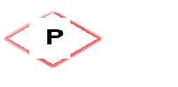

A propriedade position especifica o método de posicionamento de um elemento HTML podendo ser estático, relativo, fixo, absoluto ou pegajoso. Em seguida é usada as propriedades de posicionamento como em esquerda (left:valor), direita (right:valor), topo (top:valor) e fundo (bottom:valor).
Por padrão todos os elementos HTML possuem posicionamento estático. Basicamente, eles não podem ser afetados pelas propriedades de posicionamento como centralizado, por exemplo. Assim, todos os elementos com position: static seguem o fluxo normal de uma página.
| Código | Resultado |
|---|---|
|
div {
position: static; border: solid cornflowerblue;; } |
Este elemento div é position: static;
|
Um elemento com position:relative será posicionado em relação a sua posição original. Basicamente, funciona como um elemento estático, mas podemos aplicar as propriedades de posicionamento e posicionar o elemento.
Como observação, nenhum outro elemento será ajustado para caber na lacuna deixada pelo elemento relativo.
| Código | Resultado |
|---|---|
|
div {
position: relative; border: solid cornflowerblue;; top: 2em; left: 2em; } |
Este elemento div é position: relative; com posicionamento top: 2em; left: 2em;
|
Um elemento com position:fixed está posicionado em relação à janela de visualização, o que significa que sempre permanece no mesmo lugar, mesmo se a página for rolada.
Um elemento fixo não deixa lacunas na posição original, ou seja, o espaço acaba sendo preenchido pelos demais elementos.
| Código | Resultado |
|---|---|
|
div {
position: fixed; border: solid cornflowerblue; bottom: 0; left: 0; background-color: black; color: white; } |
Um elemento com position:absolute está posicionado em relação um dos seus ancestrais, cujo o mais próximo esteja posicionado (não estático). Basicamente, se um elemento absoluto não tiver ancestrais mais próximos, ele então usará o corpo do documento e se moverá junto com a rolagem da página.
| Código | Resultado |
|---|---|
|
div {
position: relative; border: solid cornflowerblue; height: 100px; width: 50%; }
div div {
position: absolute; border: solid cornflowerblue; bottom: 0; left: 0; background-color: black; color: white; }
.div2 {
position: absolute; border: solid red; bottom: 0; left: 50%; background-color: black; color: white; } |
Um elemento position:sticky se torna fixo quando o usuário rola a página até ele. Basicamente, o elemento alterna entre relativo e fixo. No exemplo abaixo, a div fixa na tela, quando o o topo da página (top: 0) encosta sobre ela.
| Código | Resultado |
|---|---|
|
.div {
position: sticky; border: solid cornflowerblue; top: 0; background-color: black; color: white; } |
Acontece de alguns elementos ficarem um sobre os outros, e as vezes de forma intencional. Quando isso acontece, podemos usar a propriedade z-index para dizer quais elementos devem ficar na parte da frente e quais devem ficar na parte de trás.
No exemplo abaixo, colocamos o texto sobre uma img.
| Código | Resultado |
|---|---|
|
div { position: relative; width: 30%; height: 7em; }
p { position: relative; left: 7em; top: 3em; background-color: darkblue; color: crimson; }
img {
position: absolute; left: 0; top: 0; z-index: -1; } |
Projetando um Projeto  |